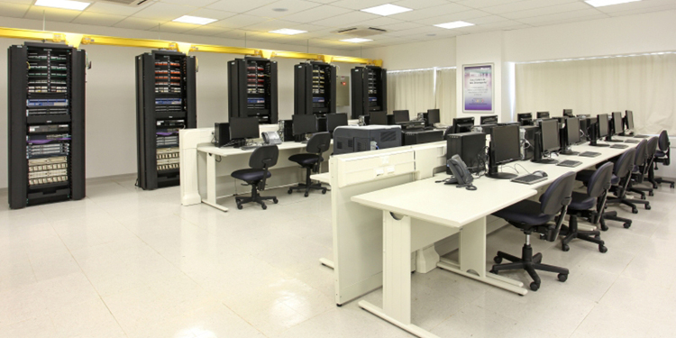
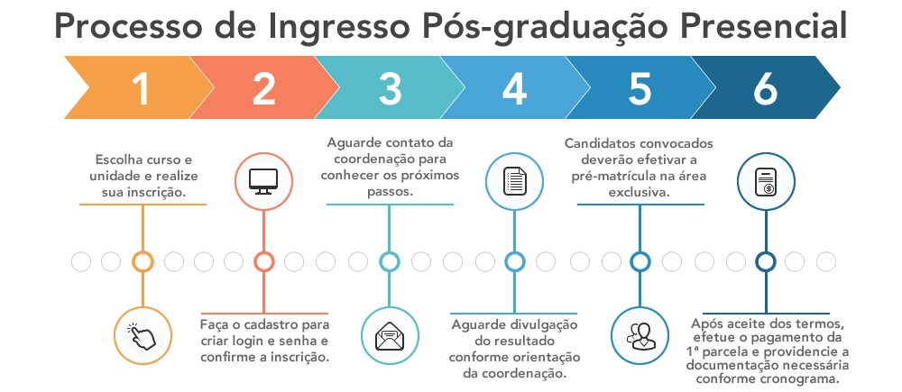

O Curso
Especializar profissionais que atuem ou desejem atuar na área de IoT, com a visão dos softwares e hardwares relacionados, identificando a necessidade de investimento e inovação por meio das tecnologias envolvidas de acordo com as tendências do mercado, provendo o empreendedorismo, por meio do planejamento e desenvolvimento de soluções criativas e eficientes.
Além disso, o curso contribui para:
- Propiciar condições e situações de aprendizagem multidisciplinares característicos da Internet das Coisas para que o profissional possa atuar na gestão de projetos de desenvolvimento de soluções inteligentes e inovativas com IoT.
- Desenvolver a capacidade analítica para a avaliação de viabilidade dos produtos e soluções IoT, junto a questões de segurança de dados, éticas e técnicas relacionadas com a confiabilidade da informação;
- Fortalecer a visão empreendedora e inovadora do aluno de modo a atender a demanda de profissionais especializados na área de Internet das Coisas.
Carga Horária: 360 horas

O profissional com essa especialização poderá atuar em empresas de diversas áreas que necessitem da tecnologia como parceira fundamental na estratégia dos negócios, essencialmente em projetos inovativos que contemplem técnicas e ferramentas ofertadas pela Internet das Coisas.
As atividades em questão requerem profissionais capazes de gerenciar projetos com tecnologias sofisticadas e atualizadas, desenvolvendo soluções inovadoras por meio das soluções IoT, considerando os principais tipos de aplicações, métodos para segurança de dados e requisitos de infraestrutura (software e hardware), com a finalidade de identificar, viabilizar e implementar a arquitetura de projetos ideal para cada segmento de negócio com base nas soluções proporcionadas pela Internet das Coisas.
Além das atividades citadas, o profissional será capaz de identificar ferramentas e técnicas de coleta, transformação e análise de dados provenientes de aplicações e dispositivos IoT a fim de reconhecer e gerar oportunidade e inteligência corporativa, além de planejar corretamente a interação homem/máquina das soluções, planejando corretamente as formas de usabilidade e interatividade dentre os mais diversos pontos de contato proporcionados pelos aplicativos IoT, visando reconhecer as mudanças na forma de interação entre usuários e dispositivos por meio de tecnologias de interface.
O profissional poderá atuar em consultorias, nos departamentos de tecnologia e telecomunicações das empresas em todas suas vertentes, com destaque nas áreas de inteligência artificial, tecnologia da informação, análise de sistemas e sistemas de informação. Também estará apto a atuar no setor de pesquisa, desenvolvimento e inovação nas áreas de comércio e administração, marketing, publicidade, empreendedorismo e demais campos relacionados.
Portadores de diplomas de graduação em diferentes áreas, preferencialmente ligadas à tecnologia da informação, engenharia e áreas afins, tais como: ciência da computação, análise de sistemas, sistemas de informação, redes de computadores, desenvolvimento web, banco de dados, engenharia elétrica, automação e controle, mecatrônica, mecânica e comunicação.
Visa, igualmente, atender à necessidade de gestores de tecnologia, pesquisa, desenvolvimento e inovação, que possuam conhecimentos nas diversas competências de gestão na área e que precisem se atualizar perante as transformações que a IoT está provocando nas organizações.
A metodologia de ensino adotada favorece o desenvolvimento da visão sistêmica do processo de desenvolvimento de soluções inovativas baseadas em Internet das Coisas, contextualizando conceitos técnicos, gerenciais e mercadológico no qual permitirão ao egresso avaliar criticamente e sob diferentes aspectos todo o processo de desenvolvimento e implantação de projetos baseados em IoT.
Sendo assim, mais do que ensinar um conjunto de métodos, técnicas ou ferramentas, as disciplinas devem proporcionar a capacidade de discernimento e tomada de decisão em relação a quais métodos, técnicas ou ferramentas são mais adequadas em cada situação ou contexto para automatização de processos e abertura de novos mercados, utilizando para tal, tecnologias relacionadas à Internet das Coisas.
Para este objetivo, utiliza-se preferencialmente métodos de ensino que englobam estudos de caso e a realização de trabalhos que envolvam análise, diagnóstico e decisão sobre cada componente curricular, capacitando o aluno a gerenciar projetos e a implementar processos de inovação digital com IoT.
Pós-graduação lato sensu - Especialização em Internet das Coisas: inovação tecnológica e negócios (certificado expedido pelo Centro Universitário Senac).
Inscrições abertas de 07 de outubro de 2019 a 28 de fevereiro 2020
Para candidatos brasileiros - apresentar cópias autenticadas em cartório:
- Diploma de graduação, devidamente registrado nos termos das normas estabelecidas pelo Ministério da Educação (MEC);
- Documento de Identificação Civil;
- Cadastro de Pessoa Física (CPF);
- Uma foto 3x4 recente, sem data (colocar o nome completo no verso).
Caso o candidato ainda não esteja de posse do diploma, é permitida a entrega do Certificado ou Declaração de Conclusão, com a data que ocorreu a colação de grau, que deve ser anterior à data de início do curso no qual o aluno está realizando a matrícula, condicionada a entrega posterior do diploma, documento necessário para a expedição do certificado de conclusão do curso de pós-graduação.
A data de validade do Certificado ou da Declaração de Conclusão deverá ser de até, no máximo, 1 (um) ano, anterior à data da matrícula no curso.
Para candidatos estrangeiros - apresentar cópias autenticadas dos seguintes documentos:
- Diploma de graduação, devidamente revalidado nos termos da legislação brasileira vigente;
- Registro Nacional de Estrangeiro (RNE) ou Passaporte e do visto temporário de estudante;
- Cadastro de Pessoa Física (CPF);
- Uma foto 3x4 recente (colocar o nome completo no verso);
- Declaração de proficiência em língua portuguesa, assinada por professor habilitado;
- Plano de seguro, que assegure a cobertura de despesas médico-hospitalares e despesas de repatriação, para os estrangeiros não residentes no Brasil.
Os documentos encaminhados para a matrícula serão analisados e, sendo constatada alguma irregularidade o Centro Universitário se reserva o direito de cancelar a matrícula a qualquer tempo.
Caso o processo de matrícula seja cancelado o candidato será comunicado por e-mail e deverá se manifestar quanto a devolução da documentação no prazo de 30 (trinta) dias corridos, a contar da data de envio do e-mail de cancelamento da matrícula. Caso não se manifeste os documentos serão destruídos.
O candidato poderá optar pela devolução dos documentos via Correios, neste caso, deverá responder o e-mail de cancelamento do processo de matrícula e indicar o endereço de sua preferência para o recebimento da documentação e autorizar a geração de boleto bancário referente aos custos da taxa de envio.
INTRODUÇÃO À INTERNET DAS COISAS 32 Horas
Apresenta os principais conceitos, características e definições da Internet das Coisas, junto ao seu contexto histórico e às tecnologias que a caracterizam, revelando tanto a sua convergência tecnológica quanto o avanço das redes de comunicação, infraestrutura e plataformas de desenvolvimento - para que tais tecnologias se tornassem inovativas e presentes no cotidiano de pessoas e empresas, por meio da conexão entre os mais variados dispositivos. Analisa o impacto, a mudança de comportamento, as diferentes formas de comunicação e consumo de conteúdo que a IoT trouxe, por meio da interação entre homem e máquina, mostrando seu impacto na cultura organizacional das empresas e no cotidiano das pessoas.
APLICAÇÕES DA INTERNET DAS COISAS 32 Horas
Apresenta os diferenciais dos dispositivos da Internet das Coisas, desmistificando os tipos de aplicações, bem como as propriedades e os requisitos que caracterizam um dispositivo ou um produto na era da IoT. Aborda as diferentes aplicações possíveis de serem realizadas nos mais variados segmentos de mercado, como no setor de energia, medicina, biomedicina, educação, transporte, comércio e varejo. Contextualiza as aplicações dos dispositivos vestíveis (wearables), casas inteligentes (smart homes applications), carros conectados (connected cars), sistemas de saúde inteligentes (health care), cidades inteligentes (smart cities) e automação industrial na era 4.0 (industrial automation).
CIBERSEGURANÇA EM INTERNET DAS COISAS 40 Horas
Aborda as principais técnicas para prevenção de dados, dispositivos e gerenciamento dos riscos apresentados pelos sistemas da Internet das Coisas. Apresenta e explora a formas de prevenção relacionadas à IoT Network Security, exibindo os níveis de segurança necessários para os sistemas de rede da Internet das Coisas, tais como: a IoT Authentication (autenticação de dispositivos da IoT, como no uso de certificados digitais e biométricas); a IoT Encryption (modelos de criptografia utilizados nos sistemas da Internet das Coisas, mantendo a integridade dos dados); IoT PKI (recursos digitais para chaves criptográficas em IoT); a IoT Security Analytics (padrões de segurança para coleta e análise de dados oriundos de diferentes fontes); e a IoT API Security (camada de aplicação capaz de identificar e autorizar a movimentação de aplicativos da IoT, por meio da arquitetura Representational State Transfer, REST).
TRABALHO DE CONCLUSÃO DE CURSO I 16 Horas
Orienta sobre a metodologia de projetos, dando início à construção da estrutura básica do plano de negócios: objetivos, público-alvo, finalidades, funcionalidade, diretrizes e planejamento. Propicia o alinhamento às estratégias de conexão e interação que o plano de negócios deve ter entre os ambientes físico e virtual junto aos parâmetros de segurança necessários para concepção da solução.
HARDWARE E INFRAESTRUTURA 40 Horas
Apresenta a arquitetura de computadores, sensores e atuadores necessários para projetar sistemas com base nas tecnologias da Internet das Coisas, contemplando sistemas microprocessados, microcontrolados e os diversos tipos de sensores e plataformas de desenvolvimento (como RFID, Arduino, RaspberryPi, Beagleboard e Dashbutton), juntamente com os diversos propósitos e funcionalidades (como controle de temperatura, detecção de movimento, geolocalização, entre outros), e unindo essas tecnologias às simbologias empregadas no desenvolvimento de diagramas elétricos, capazes de produzir os primeiros projetos com base nos conceitos da IoT. Aborda os pincipais protolocos de transmissão de dados como NFC, Bluetooth, Wi-Fi e as topologias de redes e tecnologias celulares necessárias para permitir que tais dispositivos e sensores se comuniquem entre si. Contextualiza e exemplifica as formas de interoperabilidade entre as camadas fisicas, de rede e de aplicações da IoT, tornando possível a comunicação entre os mais diversos dispositivos de forma segura e estável.
ARQUITETURA E SOFTWARE 40 Horas
Apresenta os principais algoritmos, estruturas de dados, linguagens de programação, APIS e plataformas associadas às tecnologias voltadas ao desenvolvimento de softwares para IoT. Apresenta e exemplifica a aplicabilidade e a aderência mercadológica às linguagens de desenvolvimento mais populares. Contextualiza as principais plataformas em nuvem para o desenvolvimento de soluções baseadas em IoT. Capacita o aluno a escolher os melhores modelos de arquitetura de acordo com a necessidade de cada projeto.
WEB, USABILIDADE E INTERNET DAS COISAS 32 Horas
Apresenta de que maneira a Internet das Coisas está transformando o cenário web com a integração de dados desestruturados vindos dos mais variados tipos de sensores, construção de sistemas escaláveis e protocolos exclusivos de comunicação, como XMPP e AMQP. Aborda as propostas do Open Web Application Security Project (OWASP) e de APIS, e codificações do WoT Web of Things (WoT), do W3C, que visam: apresentar uma proposta de criação de plataformas interoperáveis e desfragmentar APIS proprietárias; reduzir custos de desenvolvimento; e incentivar o crescimento exponencial no mercado de dispositivos e serviços de IoT, por meio do uso de linguagens abertas e codificações de dados open source, permitindo aos aplicativos que comuniquem-se entre si de forma segura e indepentente. Apresenta os conceitos de acessibilidade e suas tecnologias relacionadas – no âmbito das empresas e das pessoas que criam e usam Internet das Coisas como produto ou serviço –, considerando as diferentes formas de acesso existentes entre pessoas e máquinas, unificando as necessidades de interface entre os diferentes dispositivos e softwares da IoT, por meio de técnicas como o design centrado no usuário, a análise de requisitos funcionais e de usuários, os modelos de dados e fluxos de trabalho, a avaliação heurística, o teste A/B, o uso de protótipos, o upgradeable, o incentivo de retenção e as perspectivas legais.
TRABALHO DE CONCLUSÃO DE CURSO II 16 Horas
Orienta sobre a estrutura técnica, com o objetivo de determinar corretamente a arquitetura de hardware e software necessárias para concepção da estrutura do projeto, torna claro as reais necessidades técnicas em termos de algoritmos, estrutura de dados e bancos de dados, sistemas e arquitetura de redes e computadores. Propicia o desenvolvimento de um protótipo conceitual do aplicativo.
GESTÃO DE PROJETOS 32 Horas
Apresenta diferentes ferramentas e técnicas para gerenciamento de projetos, desde a gestão tradicional, utilizando as boas práticas do PMI, por meio dos estudos das áreas de conhecimentos (integração, escopo, tempo, custo, recursos, aquisições, comunicações, partes interessadas, qualidade e riscos) e dos grupos de processos aos métodos de gestão ágil. Estuda a cultura, a mentalidade e o manifesto ágil, tais como Scrum, Lean Kanban, Programação Exterma (XP), visando capacitar a transformação de ideias em negócios, de forma segura e consistente.
NEGÓCIOS E EMPREENDEDORISMO 32 Horas
Apresenta as principais técnicas, tendências e ferrametnas nos modelos de negócios aplicados a processos de inovação digital que envolvem a Internet das Coisas. Apresenta as tecnologias emergentes junto às organizações de futuro e o comportamento do mercado dentro deste contexto disruptivo. Aborda a inovação aberta (redes de inovação e inovação cross-boarder) e as ferramentas de inteligência e estratégia tecnológica (como technology landscape, technology forecast, venture building e corporate venturing). Discute como o empreendedorismo transforma os profissionais em agentes de mudança e como são capazes de inovar por meio da disrupção tecnológica – criando uma cadeia de valores, monetização e vantagens competitivas –, e das aplicações baseadas em IoT em diferentes segmentos de mercado.
ANÁLISE DE DADOS E BIG DATA 32 Horas
Apresenta conhecimentos e princípios de Big Data (características e infraestrutura), assim como os formatos de dados estruturados, desestruturados e semiestruturados. Aborda as técnicas de data analytics como análise preditiva, mineração de dados, análise em tempo real, dados históricos, análise preditiva e cognitiva, inteligência artificial e machine learning (para aprendizado de máquina, a partir da obtenção, estruturação, padronização e reconhecimento de dados unificados). Conceitua os principais bancos de dados da Internet das Coisas como NoSQL e Hadoop, a linguagem “R” (especializada na manipulação), a análise e a visualização gráfica de dados, com objetivo de obter respostas precisas de dados produzidos pelos dispositivos conectados à rede.
TRABALHO DE CONCLUSÃO DE CURSO III 16 Horas
Orienta a finalização da produção desenvolvida nas etapas anteriores de acordo com as normas técnicas, implicações legais, sociais e padrão científico do campo de formação, avaliando a viabilidade do projeto e suas estratégias de lançamento e comercialização. Evidencia ao aluno os novos modelos de negócios proporcionados pela Internet das Coisas, trazendo como estratégia comercial os valores aplicados à segurança e à privacidade, a qualidade e o aumento de produtividade, a redução de custos operacionais e o aumento de receita, fundamentando, assim, tomadas de decisões gerenciais no campo de projetos destinados à Internet das Coisas.